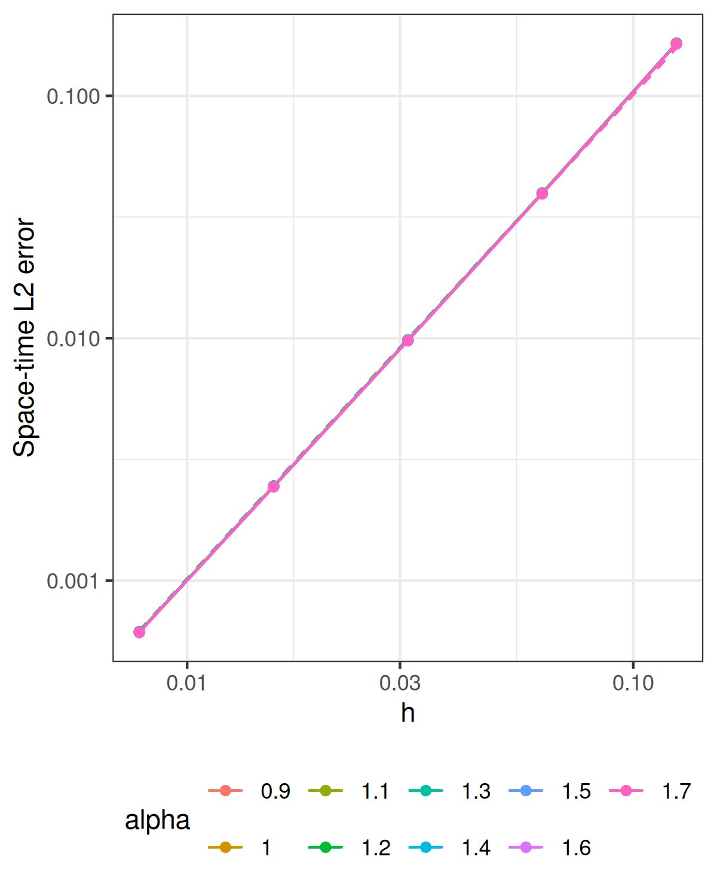

Experiments · Theory and functions
Knit loads the saved results and redraws the plots. The heavy
computation chunk has eval=FALSE and runs only when you
execute it manually. Run the chunks from top to bottom to generate new
results. Keep the parameters below consistent with the errors you
load.
# Initialize the R engine before purl() for interactive sessions.
knitr::opts_chunk$set(engine="R")
knitr::purl("brasilfunc.Rmd", output="brasilfunc.R", quiet=TRUE)## [1] "brasilfunc.R"source("brasilfunc.R")knitr::opts_chunk$set(message=FALSE, warning=FALSE, error=FALSE, cache=FALSE)library(ggplot2)On the tadpole graph with stem length \(1\) and loop length \(2\), let \(L=\kappa^2-\Delta_\Gamma\) be the shifted
Kirchhoff–Laplacian. We solve \[
u_t+\nu L^\beta u=a_f A\sin(\omega t)e_7,
\qquad u(0)=a_0e_5,\qquad \beta=\alpha/2.
\] Here \(Le_j=\lambda_j e_j\)
and the \(e_j\) are orthonormal in
\(L_2(\Gamma)\). The amplitudes \(a_0,a_f,A\) and frequency \(\omega\) are
initial_amplitude, forcing_amplitude,
AAA, and OMEGA.
Writing \(u(t)=\sum_j c_j(t)e_j\)
and taking the inner product with \(e_j\) reduces the equation to \[
c_j'(t)+\gamma_j c_j(t)=a_f A\sin(\omega t)\,\mathbf{1}_{\{j=7\}},
\qquad c_j(0)=a_0\mathbf{1}_{\{j=5\}},
\qquad \gamma_j=\nu\lambda_j^\beta.
\] Only two coefficients are nonzero. The initial mode decays as
\(c_5(t)=a_0e^{-\gamma_5t}\). Variation
of constants gives \[
\begin{aligned}
c_7(t)
&=a_f A\int_0^t e^{-\gamma_7(t-r)}\sin(\omega r)\,dr\\
&=\frac{a_f A}{\gamma_7^2+\omega^2}
\left[\gamma_7\sin(\omega t)-\omega\cos(\omega t)
+\omega e^{-\gamma_7t}\right].
\end{aligned}
\] Therefore the reference solution is exactly \[
u(s,t)=c_5(t)e_5(s)+c_7(t)e_7(s).
\] exact_modal_coefficients() evaluates these
coefficients at the reference times. The reference eigenfunctions
evaluate the continuum solution; the computed FEM solution is advanced
by sparse matrix solves. Increasing N_finite does not add
active solution modes for these data: all initial and forcing
coefficients outside modes \(5\) and
\(7\) are zero.
For any finite \(r\ge0\), the spectral Sobolev norm of the initial data is \[ \|u_0\|_{\dot H^r(\Gamma)}^2=a_0^2\lambda_5^r<\infty. \] Likewise, \[ \|f\|_{L_2(0,T;\dot H^r(\Gamma))}^2 =a_f^2 A^2\lambda_7^r\int_0^T\sin^2(\omega t)\,dt<\infty. \] Thus both data have arbitrarily high spectral spatial regularity. Their regularity permits the spatial estimate to reach the P1 rate limit, and the solution coefficients are smooth in time. Changing \(\alpha\) changes the damping rates \(\gamma_j\), but does not reduce this data regularity.
Let \(V_h\) be the continuous P1
space with hats \(\psi_i\). Define
\[
\mathbf C_{ij}=(\psi_j,\psi_i)_{L_2(\Gamma)},\qquad
\mathbf G_{ij}=(\psi_j',\psi_i')_{L_2(\Gamma)},\qquad
\mathbf L=\kappa^2\mathbf C+\mathbf G,
\] and \((\boldsymbol\ell_j)_i=(e_j,\psi_i)_{L_2(\Gamma)}\).
The initial coefficient vector represents the orthogonal projection
\(P_hu_0\): \[
\mathbf C\mathbf U^0=a_0\boldsymbol\ell_5.
\] project_u0_tadpole() computes this mass-matrix
solve. The initial vector is a projection, rather than the vector of
nodal samples.
On \(I_{k+1}=(t_k,t_{k+1}]\), with \(t_k=k\tau\), the forcing is averaged: \[ \overline g_{k+1} =\frac1\tau\int_{t_k}^{t_{k+1}}A\sin(\omega t)\,dt =\frac{A[\cos(\omega t_k)-\cos(\omega t_{k+1})]}{\omega\tau}, \qquad \mathbf F^{k+1}=a_f\overline g_{k+1}\boldsymbol\ell_7. \] The quotient formula applies when \(\omega\ne0\). The code uses the equivalent stable expression \(A\sin(\omega(t_k+\tau/2))\operatorname{sinc}(\omega\tau/2)\), where \(\operatorname{sinc}(z)=\sin(z)/z\) and \(\operatorname{sinc}(0)=1\). The sine–hat integrals defining \(\boldsymbol\ell_5\) and \(\boldsymbol\ell_7\) are evaluated analytically on the solver mesh.
The matrix of the discrete operator \(L_h\) is \(\mathbf B=\mathbf C^{-1}\mathbf L\). Exact-discrete backward Euler would apply \[ \mathbf U_h^{k+1} =(\mathbf I+\tau\nu\mathbf B^\beta)^{-1} \left(\mathbf U_h^k+\tau\mathbf C^{-1}\mathbf F^{k+1}\right). \] For \(0<\alpha<2\), the implementation replaces this fractional inverse by a BRASIL rational function. If \(r_m(x)\) approximates \(x^\beta\), set \[ S_m(y)=r_m(y^{-1}),\qquad s=\tau\nu\kappa^{2\beta},\qquad H_m(y)=\frac{S_m(y)}{S_m(y)+s} =r_\tau+\sum_{n=1}^m\frac{a_n}{y-z_n}. \] The update used in the notebook is \[ \mathbf U_{h,m}^{k+1} =\left[r_\tau\mathbf C^{-1} +\sum_{n=1}^m a_n(\mathbf L/\kappa^2-z_n\mathbf C)^{-1}\right] \left(\mathbf C\mathbf U_{h,m}^k+\tau\mathbf F^{k+1}\right). \] The time-step poles \(z_n\) are negative and the residues \(a_n\) positive. The shifted matrices are positive definite, so their Cholesky factors can be reused at every step of a run. The constant \(r_\tau\) contributes a mass-matrix solve and is included. For \(\alpha=2\), the code directly solves \((\mathbf C+\tau\nu\mathbf L)\mathbf U^{k+1} =\mathbf C\mathbf U^k+\tau\mathbf F^{k+1}\).
The continuum target is \[ E=\|u-U_{h,m}^\tau\|_{L_2(0,T;L_2(\Gamma))},\qquad U_{h,m}^\tau(t)=\sum_i(\mathbf U_{h,m}^k)_i\psi_i, \quad t\in(t_{k-1},t_k]. \] This norm measures the error over the entire graph and time interval. The reconstruction uses the new state on each solver interval; the value at \(t=0\) has no effect on the time integral.
Let \(s_i^\star\) be the reference-mesh nodes, \(\mathbf C^\star\) its consistent mass matrix, and \(t_\ell^\star=\ell\tau_\star\) the reference times. Define \[ \boldsymbol\Psi_{ij}=\psi_j(s_i^\star),\qquad \mathbf u^\star(t)=\left[u(s_i^\star,t)\right]_i, \qquad \mathbf d_\ell=\mathbf u^\star(t_\ell^\star) -\boldsymbol\Psi\mathbf U_{h,m}^{k(\ell)}, \] where \(t_\ell^\star\in(t_{k(\ell)-1},t_{k(\ell)}]\). The reported error is \[ E_{\rm sampled}^2 =\tau_\star\sum_{\ell=1}^{N_\star} \mathbf d_\ell^\top\mathbf C^\star\mathbf d_\ell. \] The quadratic form is the exact mass norm of the P1 interpolant on the reference mesh. Together with the right-endpoint time sum, it approximates the continuum norm. No reference PDE is solved, and the two-mode exact solution has no omitted spectral tail.
prepare_reference_error() compresses the sampled
quadratic form using the reference-mesh inner product. The compiled
solver groups reference times belonging to the same solver interval and
uses their weighted coefficient means and centered scatter to accumulate
that same sum. These are moments of discrete reference samples. They do
not replace the reference-time sum by analytic integration in time.
Every backward Euler step is advanced, including steps between reference samples. Spatial reference refinement and reference-time refinement check the accuracy of the measured norm separately from the solver’s spatial, temporal, and rational approximation errors.
For \(0<\alpha<2\), the total error estimate has the form \[ E\lesssim\tau+h^q+e^{c_\alpha\sqrt m},\qquad q=\min\{s_0+\alpha/2,\ s_f+\alpha,\ 2\}-\epsilon, \qquad c_\alpha=-2\pi\sqrt{\alpha/2}, \] where \(u_0\in\dot H^{s_0}(\Gamma)\), \(f\in L_2(0,T;\dot H^{s_f}(\Gamma))\), and \(\epsilon>0\) is sufficiently small. Constants depend on the fixed problem data, including \(\nu\). Under the rational-approximation assumptions, the last term is the root-exponential rational contribution.
Step 2 permits \(s_0\ge2-\alpha/2\) and \(s_f\ge2-\alpha\). Therefore \[ q=2-\epsilon,\qquad E\lesssim\tau+h^{2-\epsilon}+e^{c_\alpha\sqrt m}. \] For rate comparisons one may take \(\epsilon=10^{-10}\), making \(2-\epsilon\) indistinguishable from \(2\) at the displayed precision. The plot uses the reference exponent \(2\). For \(\alpha=2\), the estimate is \(E\lesssim\tau+h^2\) with an exact rational representation.
For a smooth function \(v\), its P1 interpolant \(I_hv\) is affine on each mesh element. Taylor’s formula gives an elementwise interpolation error of second order. Summing the squared elementwise estimates yields \[ \|v-I_hv\|_{L_2(\Gamma)} \lesssim h^2\left(\sum_{e}\|v''\|_{L_2(e)}^2\right)^{1/2}. \] Since \(P_h\) is the best approximation in the \(L_2\) norm, \[ \|v-P_hv\|_{L_2(\Gamma)}\le\|v-I_hv\|_{L_2(\Gamma)}. \] The eigenfunctions in this experiment are smooth on every edge and continuous at the vertices. Their finite sum therefore has this second-order approximation scale. The full evolution estimate accounts also for the discrete fractional operator and gives \(h^{2-\epsilon}\). The interpolation argument explains the P1 limit; it is not a separate proof of the complete evolution error estimate.
The experiment varies \(h\) while fixing \(\tau\) and \(m\). For the displayed settings, \(\tau=2\cdot10^{-5}\), \(m=8\), and \(\nu=10^{-3}\), while \(h\in\{1/128,1/64,1/32,1/16,1/8\}\). The reference mesh and time step are both \(10^{-5}\). The parameter chunk specifies these values for a new run; saved results should be interpreted with their saved settings.
The theoretical decomposition follows the triangle inequality \[ E\le\|u-U^\tau\|+\|U^\tau-U_h^\tau\| +\|U_h^\tau-U_{h,m}^\tau\|, \] where all norms are \(L_2(0,T;L_2(\Gamma))\) and \(U^\tau\) is backward Euler before spatial discretization. The three upper-bound scales are \(\tau\), \(h^{2-\epsilon}\), and \(e^{c_\alpha\sqrt m}\). They are not orthogonal error components, so their squared values do not add as an identity.
When the spatial contribution dominates, \(E_h\approx C_\alpha h^2\) is the comparison model. Halving \(h\) should then reduce the error by about four. Eventually the fixed temporal or rational error can become visible and flatten the curve. Reference quadrature can also obscure the rate if its resolution is insufficient. Thus fixing the other parameters targets spatial convergence over a finite range, rather than asserting that the measured error is purely spatial.
The fitted relation is \[ \log_{10}E_h=s_h\log_{10}h+b_h. \] The code estimates \(s_h\) freely from all listed meshes and compares it with \(2\). The dashed curves prescribe that reference exponent and use \[ C_\alpha=\frac1{n_h}\sum_i\frac{E_{h_i}}{h_i^2}, \qquad E_{\rm guide}(h)=C_\alpha h^2. \] Their scale is the arithmetic mean of the anchored constants; it is not the intercept obtained from the free-slope log regression. These guides illustrate the expected order and are not certified upper bounds. Slopes close to \(2\), with the other errors controlled, support the smooth-data spatial prediction across the tested fractional exponents. Finite data determine an observed slope, not a proof of an asymptotic equality.
T_final <- 1
kappa <- 4
diffusion <- 1e-3
alpha_vector <- seq(0.9,1.7,0.1)
m_fixed <- 8L
h_vector <- 2^seq(-7,-3)
time_step <- 2e-5
overkill_h <- 1e-5
overkill_time_step <- 1e-5
N_finite <- 4L
initial_amplitude <- 10
forcing_amplitude <- 10
AAA <- 1
OMEGA <- pi
workers <- 9L
error_verbose <- FALSE# Saved files overwritten by this computation.
output_file <- "data_files/errors_projected_h_mat.RData"
# Assemble FEM matrices and advance every backward Euler step.
stopifnot(N_finite >= 4, N_finite%%2 == 0, length(alpha_vector) > 0, all(is.finite(alpha_vector)),
all(alpha_vector > 0 & alpha_vector <= 2), length(m_fixed) == 1, m_fixed == floor(m_fixed))
for (alpha in alpha_vector[alpha_vector != 2]) brasil_coefficients(m_fixed, alpha/2)
# Compile once in the parent session before any parallel cases start.
smooth_compile_solver()
adjusted_N_finite <- N_finite + N_finite/2 + 1
coeff_U_0 <- numeric(adjusted_N_finite)
coeff_U_0[5] <- initial_amplitude
coeff_FF <- numeric(adjusted_N_finite)
coeff_FF[7] <- forcing_amplitude
time_grid <- make_time_grid(T_final = T_final, target_step = time_step)
time_step <- time_grid$time_step
time_seq <- time_grid$time_seq
g_average <- average_sine_forcing(time_seq, A = AAA, omega = OMEGA)
stopifnot(all(coeff_U_0[-5] == 0))
stopifnot(length(coeff_FF) >= 7L, all(coeff_FF[-7] == 0))
# Assemble the reference-mesh mass matrix.
overkill_graph <- gets.graph.tadpole(h = overkill_h)
overkill_graph$compute_fem()
overkill_C <- overkill_graph$mesh$C
reference_grid <- make_time_grid(T_final = T_final, target_step = overkill_time_step)
overkill_time_step <- reference_grid$time_step
overkill_time_seq <- reference_grid$time_seq
reference_eigen_params <- gets.eigen.params(N_finite = N_finite, kappa = kappa, alpha = alpha_vector[1],
graph = overkill_graph)
reference_eigenvalues <- reference_eigen_params$EIGENVAL
auxE <- reference_eigen_params$EIGENFUN
active_modes <- which(coeff_U_0 != 0 | coeff_FF != 0)
exact_basis <- auxE[, active_modes, drop = FALSE]
exact_initial <- coeff_U_0[active_modes]
exact_forcing <- coeff_FF[active_modes]
# Loop over the refinement values and fractional exponents.
errors_projected <- matrix(NA_real_, length(h_vector), length(alpha_vector))
for (i in seq_along(h_vector)) {
h <- h_vector[i]
graph <- gets.graph.tadpole(h = h)
graph$compute_fem()
C <- graph$mesh$C
L <- kappa^2 * C + graph$mesh$G
Psi <- graph$fem_basis(overkill_graph$get_mesh_locations())
U_0 <- project_u0_tadpole(graph, amplitude = coeff_U_0[5])
spatial_load <- coeff_FF[7] * assemble_e7_load_tadpole(graph)
error_projection <- prepare_reference_error(Psi, overkill_C, exact_basis)
cases <- run_reference_cases(seq_along(alpha_vector), function(j) {
alpha <- alpha_vector[j]
beta <- alpha/2
exact_rates <- diffusion * reference_eigenvalues[active_modes]^beta
coefficients_at_time <- function(t) exact_modal_coefficients(t, exact_rates, exact_initial,
exact_forcing, A = AAA, omega = OMEGA)
my_op_frac <- my.fractional.operators.frac(L = L, beta = beta, C = C, scale.factor = kappa^2,
m = m_fixed, time_step = time_step, diffusion = diffusion)
solve_fractional_evolution_error(my_op_frac, time_step, time_seq, U_0, spatial_load, g_average,
overkill_time_seq, coefficients_at_time, error_projection, verbose = error_verbose)
}, workers = workers)
errors_projected[i, ] <- vapply(cases, base::identity, numeric(1))
}
# Save the errors together with the settings used for this run.
attr(errors_projected, "coefficient_source") <- "rSPDE BRASIL"
attr(errors_projected, "parameters") <- list(study = "h", axis = h_vector, alpha = alpha_vector,
m = m_fixed, diffusion = diffusion, kappa = kappa, T = T_final, reference_h = overkill_h, reference_tau = overkill_time_step,
N_finite = N_finite, initial_amplitude = initial_amplitude, forcing_amplitude = forcing_amplitude,
AAA = AAA, OMEGA = OMEGA, fixed = list(tau = time_step))
dir.create(dirname(output_file), recursive = TRUE, showWarnings = FALSE)
save(errors_projected, file = output_file)load("data_files/errors_projected_h_mat.RData")For smooth finite-mode data, the spatial reference slope is two. Temporal and rational error floors can mask this rate.
figure_file <- "data_files/tikzpic/p_h_nicer_tadpole_mat_with_mathpazo.png"
# Average reference curves anchored at every error point, keeping the prescribed slope.
errors <- errors_projected
axis <- h_vector
alpha <- alpha_vector
study <- "h"
frame <- expand.grid(row = seq_along(axis), column = seq_along(alpha))
frame$x <- axis[frame$row]
frame$error <- as.vector(errors)
frame$alpha <- factor(alpha[frame$column], levels = alpha)
guide <- frame
rate <- 2
for (j in seq_along(alpha)) {
ids <- frame$column == j
constant <- mean(errors[, j]/axis^rate)
guide$error[ids] <- constant * guide$x[ids]^rate
}
plot <- ggplot2::ggplot(frame, ggplot2::aes(x, error, color = alpha, group = alpha)) + ggplot2::geom_line(data = guide,
linetype = "dashed") + ggplot2::geom_line() + ggplot2::geom_point() + ggplot2::scale_x_log10() +
ggplot2::scale_y_log10() + ggplot2::labs(x = study, y = "Space-time L2 error", color = "alpha") +
ggplot2::theme_bw() + ggplot2::theme(legend.position = "bottom")
dir.create(dirname(figure_file), recursive = TRUE, showWarnings = FALSE)
ggplot2::ggsave(figure_file, plot, width = 4, height = 5, dpi = 300, bg = "white")
knitr::include_graphics(figure_file)
observed <- apply(errors_projected, 2, function(e)
unname(coef(lm(log10(e) ~ log10(h_vector)))[2]))
knitr::kable(data.frame(alpha=alpha_vector, reference=2, observed=observed), digits=5)| alpha | reference | observed |
|---|---|---|
| 0.9 | 2 | 2.01545 |
| 1.0 | 2 | 2.01546 |
| 1.1 | 2 | 2.01546 |
| 1.2 | 2 | 2.01547 |
| 1.3 | 2 | 2.01548 |
| 1.4 | 2 | 2.01549 |
| 1.5 | 2 | 2.01550 |
| 1.6 | 2 | 2.01551 |
| 1.7 | 2 | 2.01553 |
knitr::kable(data.frame(h=h_vector, errors_projected, check.names=FALSE),
col.names=c("h", paste("alpha =", alpha_vector)),
format.args=list(scientific=TRUE, digits=5))| h | alpha = 0.9 | alpha = 1 | alpha = 1.1 | alpha = 1.2 | alpha = 1.3 | alpha = 1.4 | alpha = 1.5 | alpha = 1.6 | alpha = 1.7 |
|---|---|---|---|---|---|---|---|---|---|
| 7.8125e-03 | 6.1520e-04 | 6.1490e-04 | 6.1450e-04 | 6.1410e-04 | 6.1350e-04 | 6.1290e-04 | 6.1210e-04 | 6.1120e-04 | 6.1000e-04 |
| 1.5625e-02 | 2.4549e-03 | 2.4537e-03 | 2.4522e-03 | 2.4505e-03 | 2.4483e-03 | 2.4458e-03 | 2.4427e-03 | 2.4391e-03 | 2.4347e-03 |
| 3.1250e-02 | 9.8416e-03 | 9.8367e-03 | 9.8309e-03 | 9.8239e-03 | 9.8154e-03 | 9.8052e-03 | 9.7930e-03 | 9.7784e-03 | 9.7608e-03 |
| 6.2500e-02 | 3.9748e-02 | 3.9728e-02 | 3.9705e-02 | 3.9677e-02 | 3.9642e-02 | 3.9601e-02 | 3.9552e-02 | 3.9493e-02 | 3.9422e-02 |
| 1.2500e-01 | 1.6518e-01 | 1.6510e-01 | 1.6500e-01 | 1.6488e-01 | 1.6474e-01 | 1.6457e-01 | 1.6436e-01 | 1.6412e-01 | 1.6382e-01 |